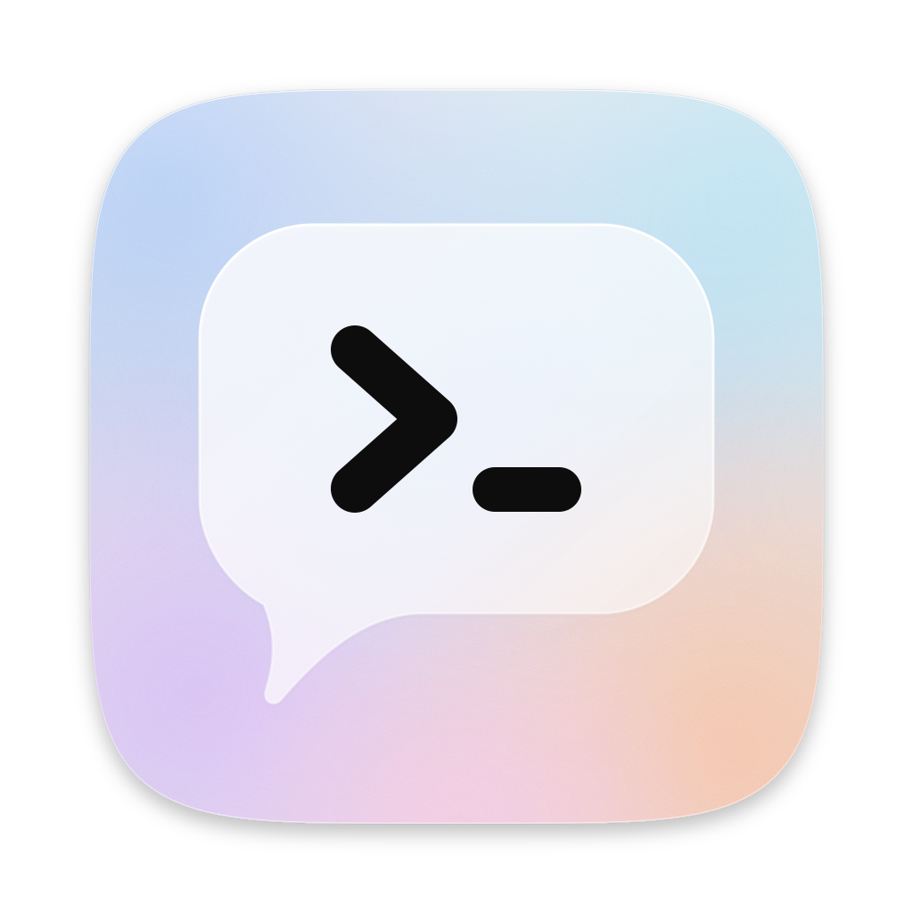
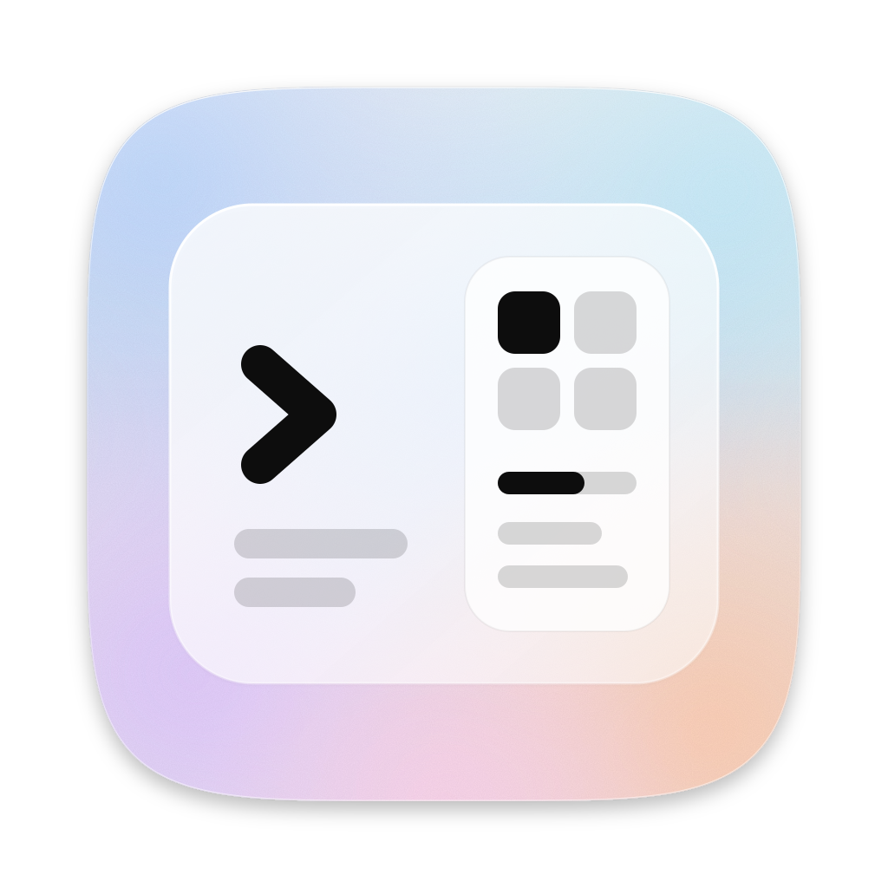
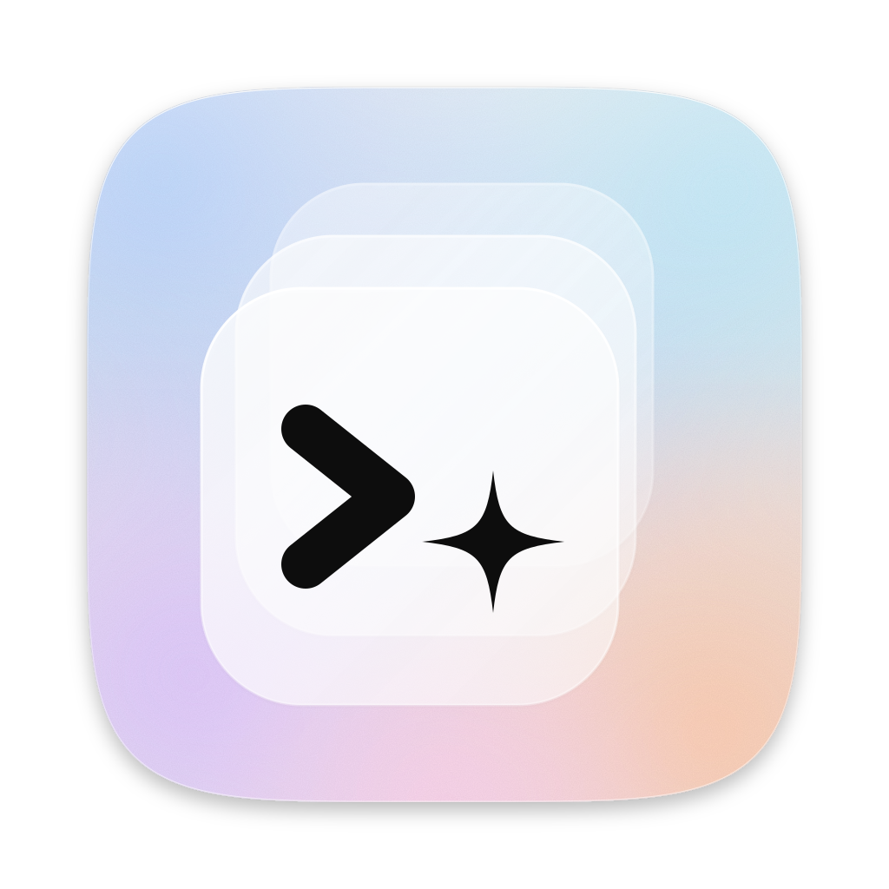

浅色深色 对话中的命令行A 磨砂对话气泡里放一个 >_ 提示符：和本地 CLI Agent 对话，是产品的主要入口。 辨识度依赖气泡外形，小尺寸最清楚与 Terminal、iTerm 的符号相近，靠气泡区分 96483216 选这个
浅色深色 Project View 缩影B 一扇磨砂窗口：左侧是 Conversation 的提示符，右侧是 Preview 面板里的 Overview 格子与进度条。 最直接地讲出“对话 + 项目视图”细节多，32 以下只剩色块，需另画小尺寸版本 96483216 选这个
浅色深色 层叠玻璃C 三层磨砂面板对应多个 Project 与 Session；最前一层是提示符，光标换成四角星，表示 AI 在这里工作。 最贴近 v04 的“玻璃上再叠一层磨砂”四角星是常见的 AI 符号，独特性一般 96483216 选这个